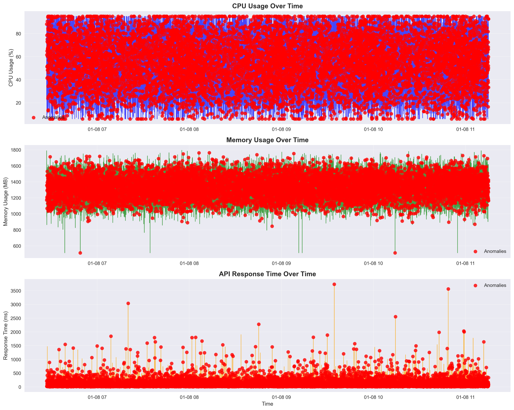
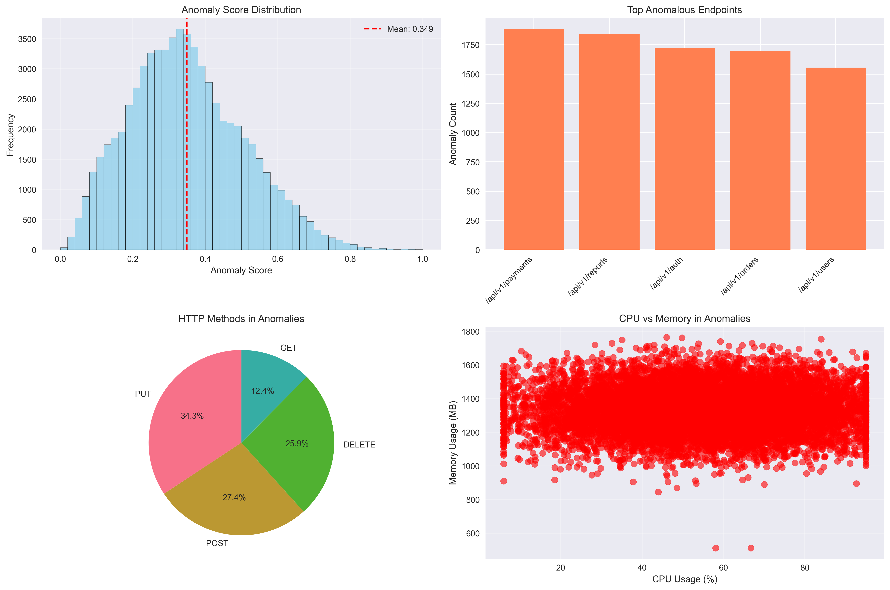

Generated: 2026-01-08 11:15:34
Analysis Period: 2026-01-08 06:26:56.821918 to 2026-01-08 11:14:56.571918


| Timestamp | Severity | Anomaly Count | Root Causes |
|---|---|---|---|
| 2026-01-08 06:25 | Medium | 102 | Traffic from 48 unapproved source(s) (48 unique IPs); Pod restart(s) detected (8 total) |
| 2026-01-08 06:30 | Medium | 154 | Traffic from 75 unapproved source(s) (75 unique IPs); Pod restart(s) detected (7 total) |
| 2026-01-08 06:35 | Medium | 170 | Traffic from 81 unapproved source(s) (81 unique IPs); Pod restart(s) detected (8 total) |
| 2026-01-08 06:40 | Medium | 153 | Traffic from 74 unapproved source(s) (74 unique IPs); Pod restart(s) detected (10 total) |
| 2026-01-08 06:45 | Medium | 153 | Traffic from 75 unapproved source(s) (75 unique IPs); Pod restart(s) detected (20 total) |
| 2026-01-08 06:50 | Medium | 180 | Traffic from 91 unapproved source(s) (91 unique IPs); Pod restart(s) detected (14 total) |
| 2026-01-08 06:55 | Medium | 226 | Traffic from 106 unapproved source(s) (106 unique IPs); Pod restart(s) detected (6 total) |
| 2026-01-08 07:00 | Medium | 188 | Traffic from 90 unapproved source(s) (90 unique IPs); Pod restart(s) detected (18 total) |
| 2026-01-08 07:05 | Medium | 184 | Traffic from 89 unapproved source(s) (89 unique IPs); Pod restart(s) detected (11 total) |
| 2026-01-08 07:10 | Medium | 135 | Traffic from 69 unapproved source(s) (69 unique IPs); Pod restart(s) detected (12 total) |
| 2026-01-08 07:15 | Medium | 143 | Traffic from 80 unapproved source(s) (80 unique IPs); Pod restart(s) detected (15 total) |
| 2026-01-08 07:20 | Medium | 160 | Traffic from 82 unapproved source(s) (82 unique IPs); Pod restart(s) detected (18 total) |
| 2026-01-08 07:25 | Medium | 153 | Traffic from 79 unapproved source(s) (79 unique IPs); Pod restart(s) detected (6 total) |
| 2026-01-08 07:30 | Medium | 153 | Traffic from 70 unapproved source(s) (70 unique IPs); Pod restart(s) detected (16 total) |
| 2026-01-08 07:35 | Medium | 146 | Traffic from 75 unapproved source(s) (75 unique IPs); Pod restart(s) detected (14 total) |
| 2026-01-08 07:40 | Medium | 172 | Traffic from 87 unapproved source(s) (87 unique IPs); Pod restart(s) detected (9 total) |
| 2026-01-08 07:45 | Medium | 172 | Traffic from 97 unapproved source(s) (97 unique IPs); Pod restart(s) detected (11 total) |
| 2026-01-08 07:50 | Medium | 235 | Traffic from 111 unapproved source(s) (111 unique IPs); Pod restart(s) detected (18 total) |
| 2026-01-08 07:55 | Medium | 246 | Traffic from 125 unapproved source(s) (125 unique IPs); Pod restart(s) detected (15 total) |
| 2026-01-08 08:00 | Medium | 207 | Traffic from 96 unapproved source(s) (96 unique IPs); Pod restart(s) detected (13 total) |
| 2026-01-08 08:05 | Medium | 188 | Traffic from 87 unapproved source(s) (87 unique IPs); Pod restart(s) detected (14 total) |
| 2026-01-08 08:10 | Medium | 156 | Traffic from 87 unapproved source(s) (87 unique IPs); Pod restart(s) detected (10 total) |
| 2026-01-08 08:15 | Medium | 130 | Traffic from 60 unapproved source(s) (60 unique IPs); Pod restart(s) detected (13 total) |
| 2026-01-08 08:20 | Medium | 132 | Traffic from 62 unapproved source(s) (62 unique IPs); Pod restart(s) detected (10 total) |
| 2026-01-08 08:25 | Medium | 146 | Traffic from 78 unapproved source(s) (78 unique IPs); Pod restart(s) detected (9 total) |
| 2026-01-08 08:30 | Medium | 147 | Traffic from 74 unapproved source(s) (74 unique IPs); Pod restart(s) detected (8 total) |
| 2026-01-08 08:35 | Medium | 155 | Traffic from 85 unapproved source(s) (85 unique IPs); Pod restart(s) detected (10 total) |
| 2026-01-08 08:40 | Medium | 150 | Traffic from 67 unapproved source(s) (67 unique IPs); Pod restart(s) detected (12 total) |
| 2026-01-08 08:45 | Medium | 158 | Traffic from 86 unapproved source(s) (86 unique IPs); Pod restart(s) detected (11 total) |
| 2026-01-08 08:50 | Medium | 205 | Traffic from 100 unapproved source(s) (100 unique IPs); Pod restart(s) detected (13 total) |
| 2026-01-08 08:55 | Medium | 269 | Traffic from 151 unapproved source(s) (151 unique IPs); Pod restart(s) detected (15 total) |
| 2026-01-08 09:00 | Medium | 190 | Traffic from 105 unapproved source(s) (105 unique IPs); Pod restart(s) detected (10 total) |
| 2026-01-08 09:05 | Medium | 208 | Traffic from 107 unapproved source(s) (107 unique IPs); Pod restart(s) detected (19 total) |
| 2026-01-08 09:10 | Medium | 160 | Traffic from 96 unapproved source(s) (96 unique IPs); Pod restart(s) detected (8 total) |
| 2026-01-08 09:15 | Medium | 177 | Traffic from 107 unapproved source(s) (107 unique IPs); Pod restart(s) detected (5 total) |
| 2026-01-08 09:20 | Medium | 150 | Traffic from 75 unapproved source(s) (75 unique IPs); Pod restart(s) detected (4 total) |
| 2026-01-08 09:25 | Medium | 156 | Traffic from 84 unapproved source(s) (84 unique IPs); Pod restart(s) detected (6 total) |
| 2026-01-08 09:30 | Medium | 147 | Traffic from 66 unapproved source(s) (66 unique IPs); Pod restart(s) detected (6 total) |
| 2026-01-08 09:35 | Medium | 150 | Traffic from 80 unapproved source(s) (80 unique IPs); Pod restart(s) detected (13 total) |
| 2026-01-08 09:40 | Medium | 170 | Traffic from 95 unapproved source(s) (95 unique IPs); Pod restart(s) detected (10 total) |
| 2026-01-08 09:45 | Medium | 190 | Traffic from 99 unapproved source(s) (99 unique IPs); Pod restart(s) detected (15 total) |
| 2026-01-08 09:50 | Medium | 212 | Traffic from 112 unapproved source(s) (112 unique IPs); Pod restart(s) detected (5 total) |
| 2026-01-08 09:55 | Medium | 236 | Traffic from 126 unapproved source(s) (126 unique IPs); Pod restart(s) detected (13 total) |
| 2026-01-08 10:00 | Medium | 197 | Traffic from 89 unapproved source(s) (89 unique IPs); Pod restart(s) detected (14 total) |
| 2026-01-08 10:05 | Medium | 195 | Traffic from 104 unapproved source(s) (104 unique IPs); Pod restart(s) detected (14 total) |
| 2026-01-08 10:10 | Medium | 164 | Traffic from 86 unapproved source(s) (86 unique IPs); Pod restart(s) detected (9 total) |
| 2026-01-08 10:15 | Medium | 123 | Traffic from 61 unapproved source(s) (61 unique IPs); Pod restart(s) detected (13 total) |
| 2026-01-08 10:20 | Medium | 150 | Traffic from 83 unapproved source(s) (83 unique IPs); Pod restart(s) detected (11 total) |
| 2026-01-08 10:25 | Medium | 147 | Traffic from 75 unapproved source(s) (75 unique IPs); Pod restart(s) detected (7 total) |
| 2026-01-08 10:30 | Medium | 130 | Traffic from 60 unapproved source(s) (60 unique IPs); Pod restart(s) detected (4 total) |
| 2026-01-08 10:35 | Medium | 152 | Traffic from 76 unapproved source(s) (76 unique IPs); Pod restart(s) detected (18 total) |
| 2026-01-08 10:40 | Medium | 171 | Traffic from 89 unapproved source(s) (89 unique IPs); Pod restart(s) detected (9 total) |
| 2026-01-08 10:45 | Medium | 180 | Traffic from 99 unapproved source(s) (99 unique IPs); Pod restart(s) detected (15 total) |
| 2026-01-08 10:50 | Medium | 207 | Traffic from 113 unapproved source(s) (113 unique IPs); Pod restart(s) detected (23 total) |
| 2026-01-08 10:55 | Medium | 233 | Traffic from 106 unapproved source(s) (106 unique IPs); Pod restart(s) detected (8 total) |
| 2026-01-08 11:00 | Medium | 190 | Traffic from 95 unapproved source(s) (95 unique IPs); Pod restart(s) detected (18 total) |
| 2026-01-08 11:05 | Medium | 203 | Traffic from 106 unapproved source(s) (106 unique IPs); Pod restart(s) detected (28 total) |
| 2026-01-08 11:10 | Medium | 142 | Traffic from 85 unapproved source(s) (85 unique IPs); Pod restart(s) detected (8 total) |
This report was generated automatically by the ML-powered API monitoring system.